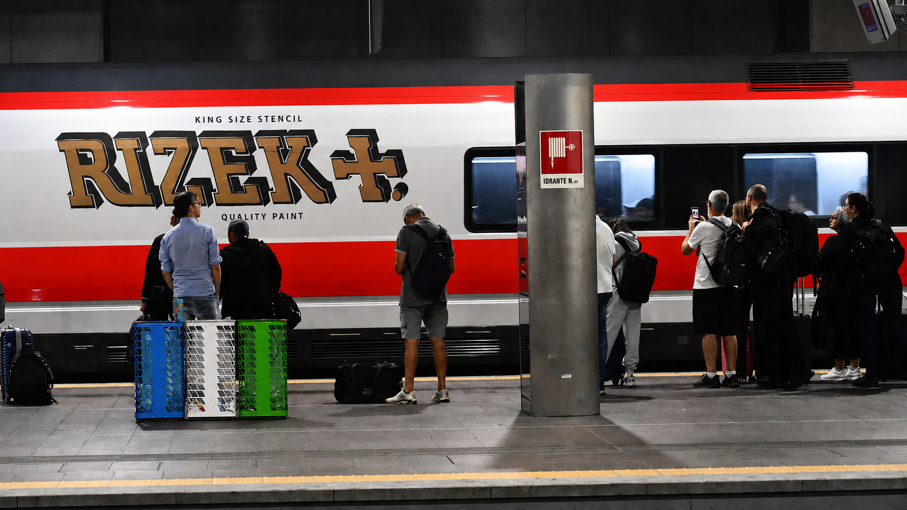

SEGNALE VIDEO
NESSUNA IDENTIFICAZIONE
Sequenze frammentate provenienti da terminali analogici. Volto non confermato. Presenza intermittente.

osserva / registra / scompare
Supporto mobile intercettato durante fase di transito. Marcatura non autorizzata rilevata su superficie ferroviaria. Permanenza sconosciuta.

Sequenze frammentate provenienti da terminali analogici. Volto non confermato. Presenza intermittente.